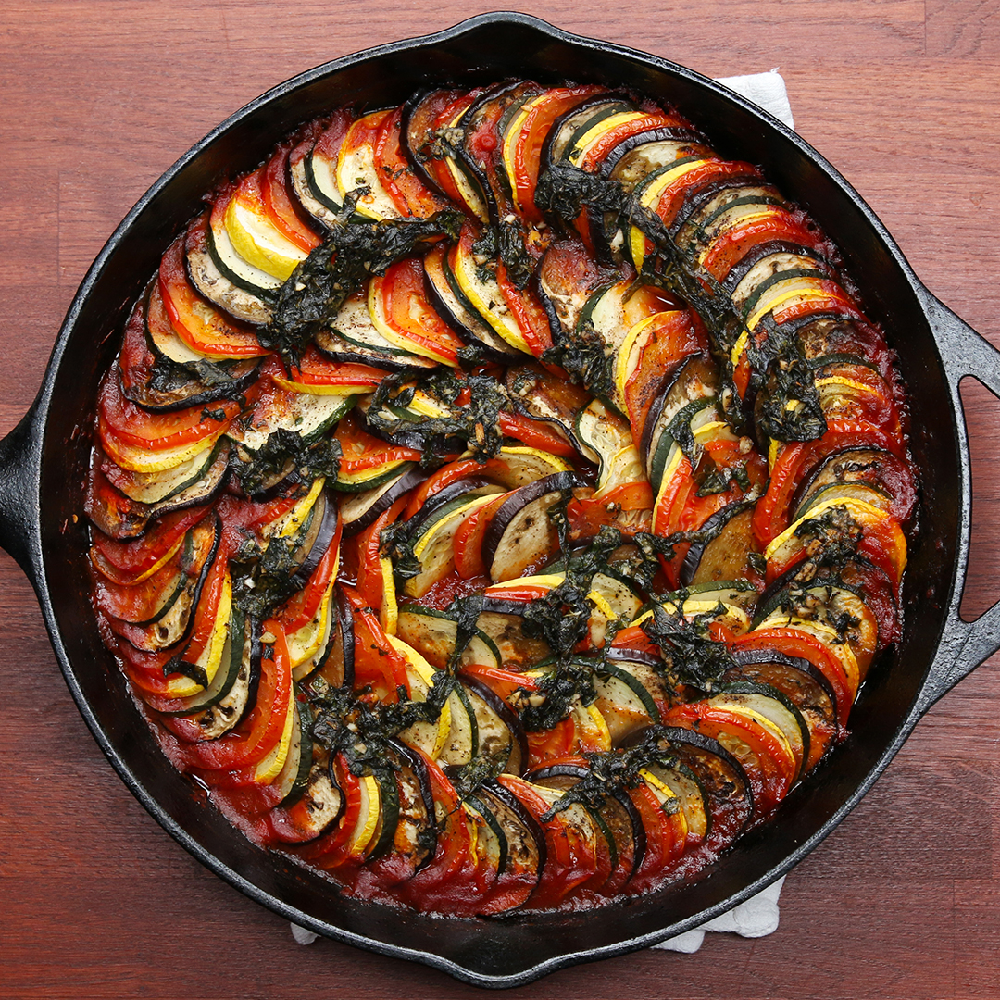

Ratatouille

Ratatouille recipe
A delicious french delicacy
Ingredients
- 1 (6 ounce) can tomato paste
- 1/2 onion, chopped
- 1/4 cup minced garlic
- 1 tablespoon olive oil
- 3/4 cup water
- Salt and ground black pepper
- 1 small eggplant, trimmed and very thinly sliced
- 1 zucchini, trimmed and very thibly sliced
- 1 yellow squash, trimmed and very thinly sliced
- 1 red bell pepper, cored and very thinly sliced
- 1 yellow bell pepper, cored and very thinly sliced
- 3 tablesponns olive oil
- 1 easpoon fresh thyme leaves
- 3 tablespoons mozarella cheese
Steps
- Preheat the oven to 375 degrees F
- Spread tomato paste into the bottom of a 10x10-inch baking dish. Sprinkle with onion and garlic and stir in 1 tablespoon olive oil and water until thoroughly combined. Season with salt and black pepper.
- Arrange alternating slices of eggplant, zucchini, yellow squash, red bell pepper, and yellow bell pepper, starting at the outer edge of the dish and working concentrically towards the center. Overlap the slices a little to display the colors. Drizzle the vegetables with 3 tablespoons olive oil and season with salt and black pepper. Sprinkle with thyme leaves. Cover vegetables with a piece of parchment paper cut to fit inside.
- Bake in the preheated oven until vegetables are roasted and tender, about 45 minutes. Serve with dollops of mascarpone cheese.